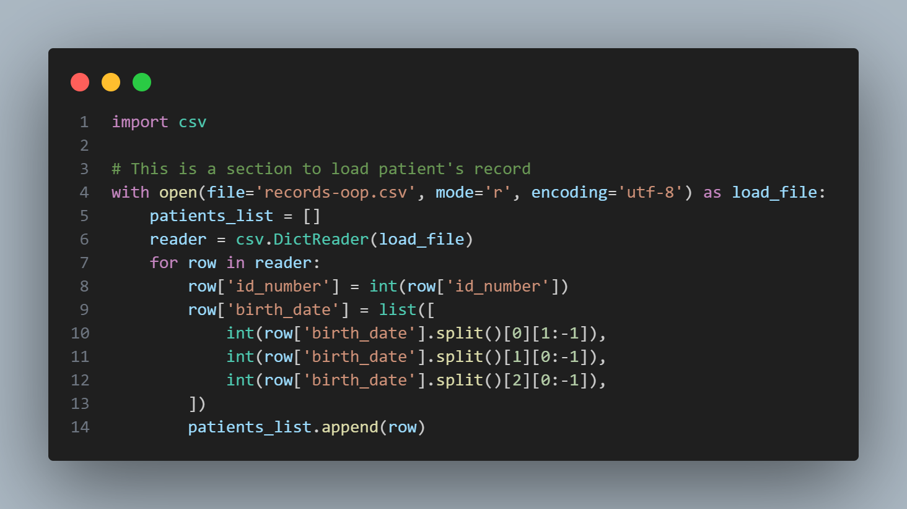
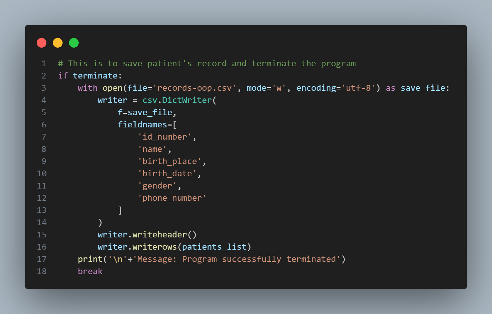
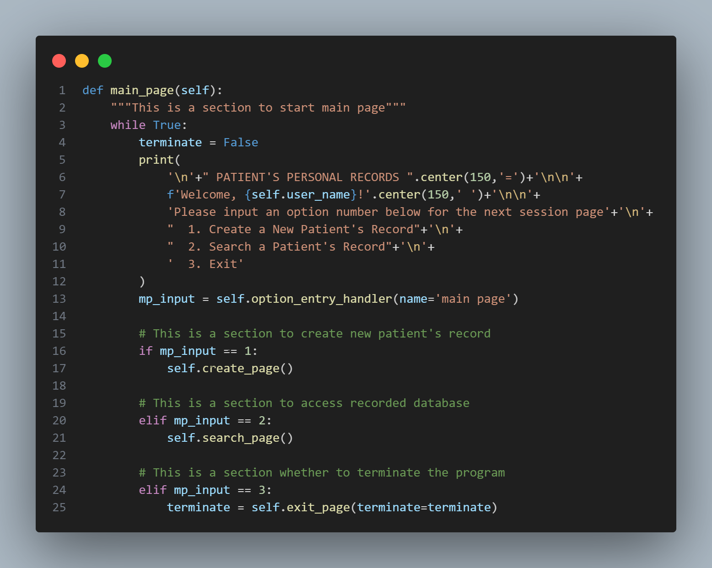
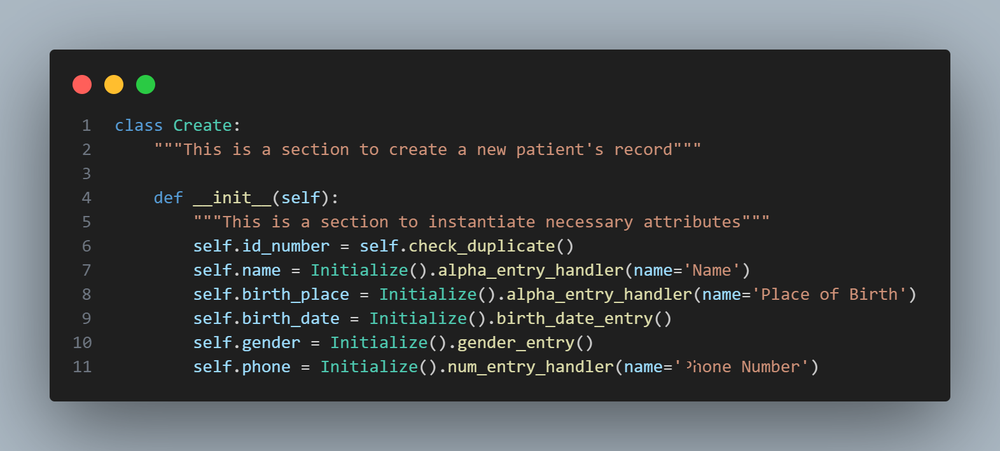
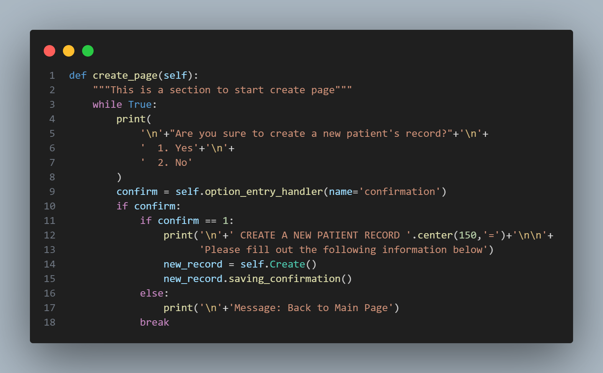
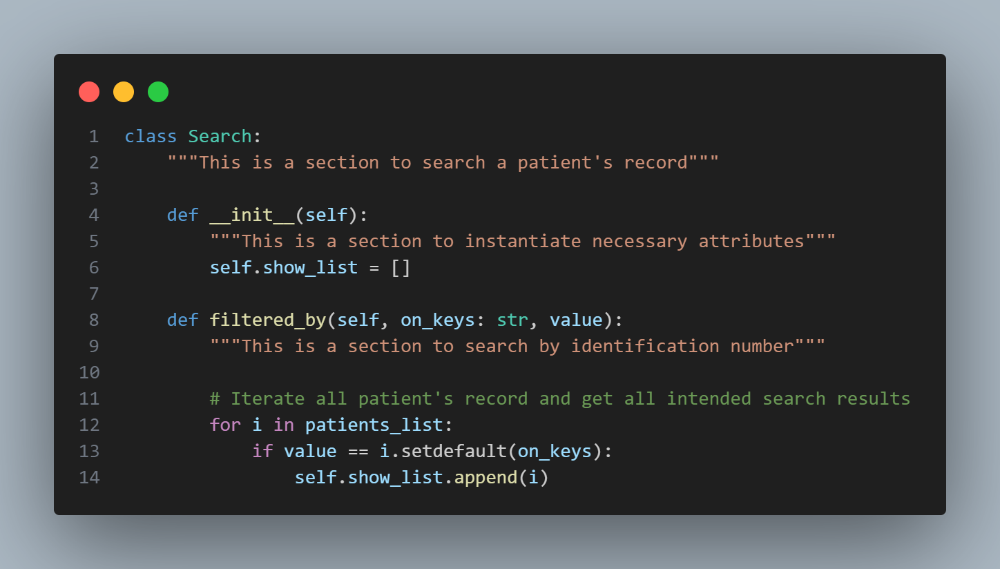
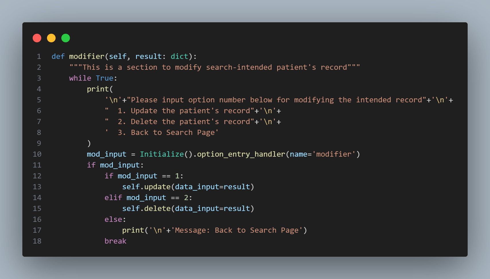
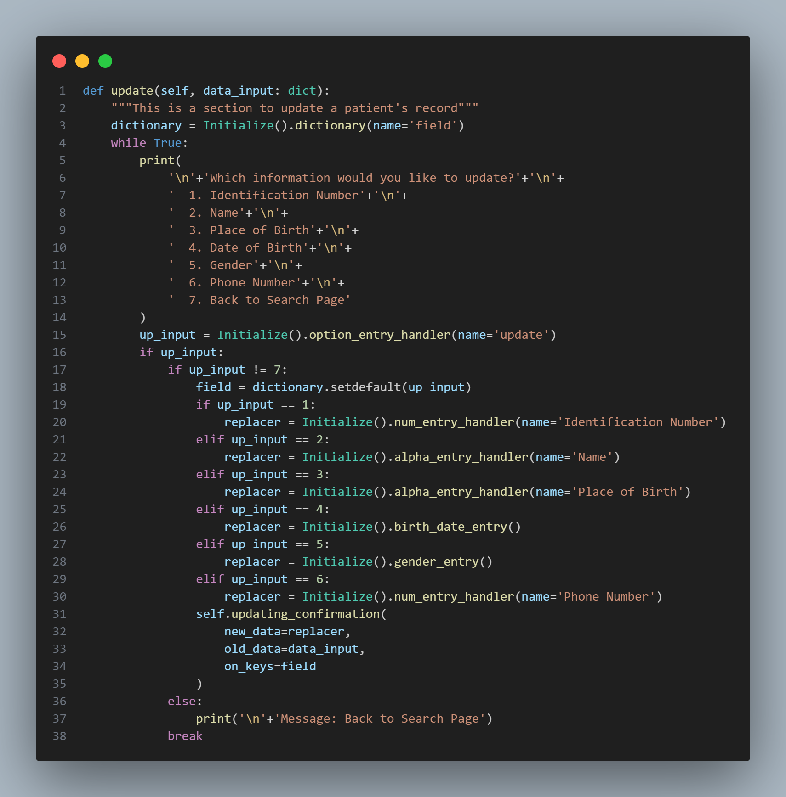
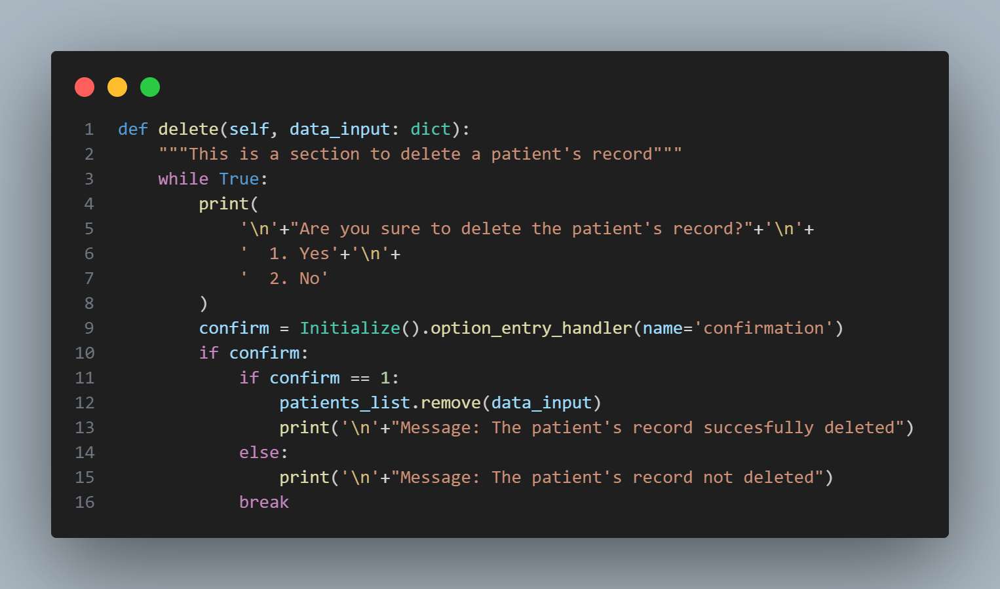

CRUD Application in Object-Oriented Programming
A simple CRUD application from scratch and implementing its functionality in Object-oriented Programming Paradigm with Python.
Introduction
Object-Oriented Programming (OOP) is a programming paradigm that structures code around the concept of "objects". Objects are instances of classes, which are templates or blueprints for creating objects. OOP focuses on modeling real-world entities and their interactions using classes and objects. It promotes encapsulation, inheritance, and polymorphism as core concepts.
Python is a popular programming language known for its simplicity and ease of use. One of the most common applications of Python is for creating CRUD application to a wide range of use cases. As for my project, this can be useful for managing and manipulating amounts of personal patient data by providing an easy-to-use interface which is customized to meet specific requirements or additional features such as data validation. As for the storage file format, we will be using CSV (Comma-Separated Values) which is a lightweight and accessible file format used for storing tabular data, or information presented in a table with rows and columns. Overall, this is just a small start of understanding the basic concepts of creating CRUD application in Object-oriented Programming Paradigm.
CRUD Operations
CRUD is an acronym that stands for Create, Read, Update, and Delete. It refers to the basic operations that are commonly performed on data stored in a database that provides an interface for users to interact with a database by performing these basic operations.
The application may also include additional features such as authentication, authorization, validation, and error handling to ensure that data is processed correctly and securely. In summary, a CRUD application is important because it provides an efficient and scalable way to manage data, automate tasks, and customize the application to meet specific business requirements. For example, in data management, it allows users to manage data easily and efficiently. Users can create, read, update, and delete data in a database with a few clicks or taps, without having to write complex SQL queries.
This project presents an example of a personal patient record in a hospital, with a focus on the necessary patient data. The hospital
name and type are not specified, but the project outlines the patient information required, including patient's identifier (ID), name,
place of birth, birthdate, gender, and phone number. An ID is unique and non-repeating label that is used to identify a patient that
later is used to retrieve or update the record. They are going to be represented as numbers. Here are detailed format and example of each data:
When working with CSV files, it's important to store all data as strings because CSV files do not have a standardized data type system. If data is not stored as a string, it may be interpreted as a different data type, leading to errors in data processing. By storing all data as strings, it can be parsed into a data structure and converted to the appropriate data type after reading the file. This ensures that the data is correctly interpreted and processed according to its intended data type.

When working with CSV files as a database, we use Command-Line Interface (CLI) to interact with the files instead of a graphical user interface (GUI). CLI can be used in CRUD applications and is particularly useful when efficiency, flexibility, portability, or security are important factors.
Implementing CRUD with CSV
As the program run within the terminal, first and foremost it should disclose what’s inside the current CSV file. We include the following codes at the very beginning.
Data Loading

The provided code snippet is all about loading patient records from a CSV file and processing the data to create a list of dictionaries. Let's
break it down step by step:
In essence, this code snippet reads patient data from a CSV file, processes the data, and stores it as a list of dictionaries. This structured data canthen be used for further analysis or manipulation in a more organized manner.
Data Saving

This section of code focuses on saving patient records to a CSV file and then terminating the program. Here's an explanation of what's happening:
In summary, this section of code checks whether the program should be terminated. If it should be terminated, it saves the patient records to a CSV file named records-oop.csv, prints a termination message, and then ends the program execution. This ensures that the patient records are properly saved before the program closes.
Control-Flow Procedure
A control-flow procedure manages the flow of execution based on different conditions and user interactions. It's responsible for guiding the program's behavior, directing it through different paths of code execution depending on the user's inputs or system states.

This main_page method handles the main menu and user interactions in a program that manages patient records:
The loop continues indefinitely, allowing the user to navigate through the program by selecting different options from the main menu. The program will continue running and processing user choices until there's an internal mechanism that modifies the loop-breaking condition or handles program termination.
Create Operations
The create operation in a CRUD application involves collecting user input, validating it, creating a new data record, storing it, and providing feedback to confirm the successful addition of the data.
Instance Creation Functionality

This code defines a class called Create which handles the creation of new patient records. The __init__ method is the
constructor for this class and is responsible for initializing the attributes for a new patient's record.
In summary, the Create class serves to instantiate and gather data for a new patient's record creation. It interacts with an Initialize class to manage various aspects of data collection and validation for patient attributes.
Create Page Management

This create_page method is responsible for managing the creation of a new patient's record. Here's the breakdown:
In summary, the create_page method guides the user through the process of creating a new patient's record. It ensures a user-friendly experience by confirming the user's intent, presenting necessary information input, and handling different outcomes based on the user's choice.
Data Interactions
Data interactions refer to how the application interacts with data throughout its lifecycle. These interactions involve performing operations like reading, updating, and deleting data records.
Instance Returning Functionality

The Search class is intended to search for patient records based on specific criteria. Here's the breakdown:
In summary, the Search class and its methods allow for searching patient records based on a specified attribute and value. It iterates through the list of patient records, compares the attribute value to the provided value, and stores matching records in the show_list attribute. This class is a part of a parent-class Initialize for searching and displaying patient records.
Updating and Deleting Modifier

This part of the code defines a method named modifier within the Search class. Here's what it does:
In summary, the modifier method within the Search class is responsible for providing a menu to the user for modifying a searched patient's record. It handles updating and deleting patient records based on the user's choice and ensures a smooth user experience for making changes to patient data.
Instance Updating Functionality

This part of the code defines a method named update within the Search class. Here's what it does:
In summary, the update method within the Search class facilitates the process of updating specific fields of a patient's record. It provides a menu for the user to choose which field to update, obtains new data for the selected field, and confirms the update operation. This method ensures a user-friendly experience for modifying patient data.
Instance Deleting Functionality

This part of the code defines a method named delete within the Search class. Here's what it does:
In summary, the delete method within the Search class facilitates the process of deleting a patient's record. It presents a confirmation prompt to the user, handles their choice, and deletes the record from the list of patient records if confirmed. This method ensures that the user can perform record deletions with proper confirmation and feedback.
Conclussion
In this project, we have successfully created a CRUD application using Python and CSV files as a database. This type of application is ideal for small-scale projects and is a great way to learn about the fundamentals of building CRUD applications in Python.
We have gained valuable experience in Python programming, CSV file handling, and CLI application development. We have also learned how to perform the four essential CRUD operations (Create, Read, Update, and Delete) on data stored in CSV files. While CSV files are a good starting point for managing small amounts of data, they may not be suitable for larger-scale applications. For more extensive projects, we may want to consider using a more robust database management system like MySQL or PostgreSQL.
In addition, building your own CRUD application will give you the opportunity to tailor it to your specific needs and requirements. You can experiment with different frameworks, databases, and data structures to find the best combination that works for you.
Overall, building your own CRUD application is an excellent way to challenge yourself and take your programming skills to the next level. Don't be afraid to start small and work your way up to more advanced projects. With persistence and dedication, you can achieve great things and become a proficient Python developer.
intentionally left blank
Please find codes detailed on Github channel.